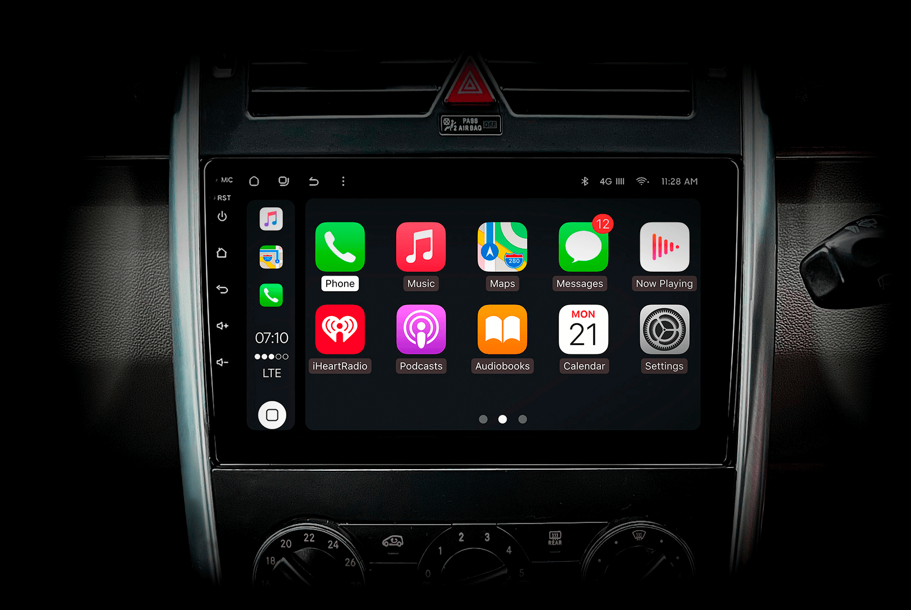
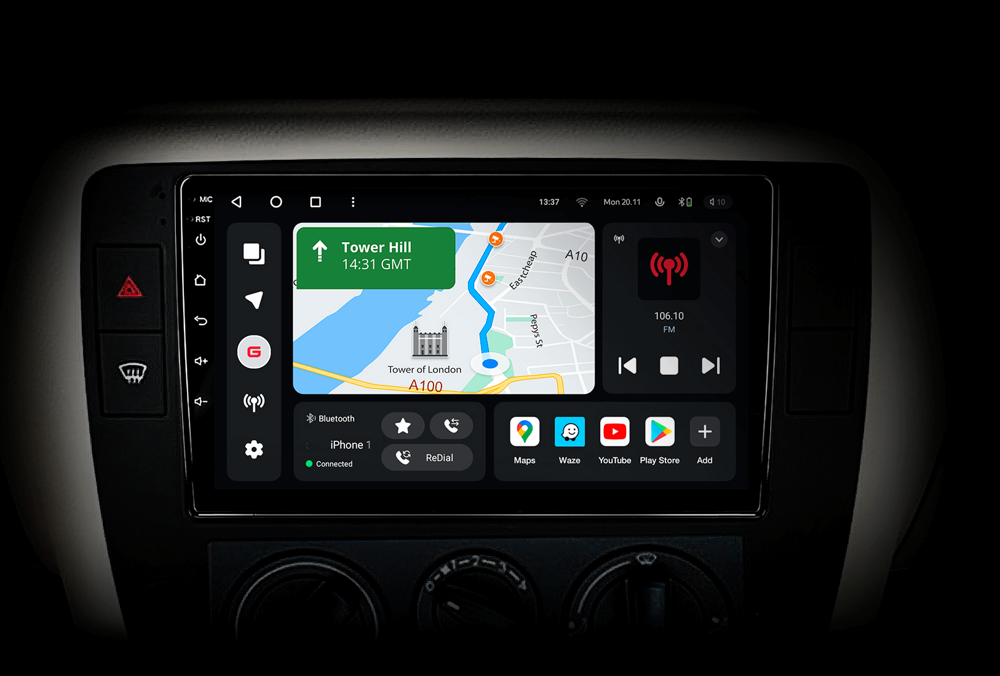
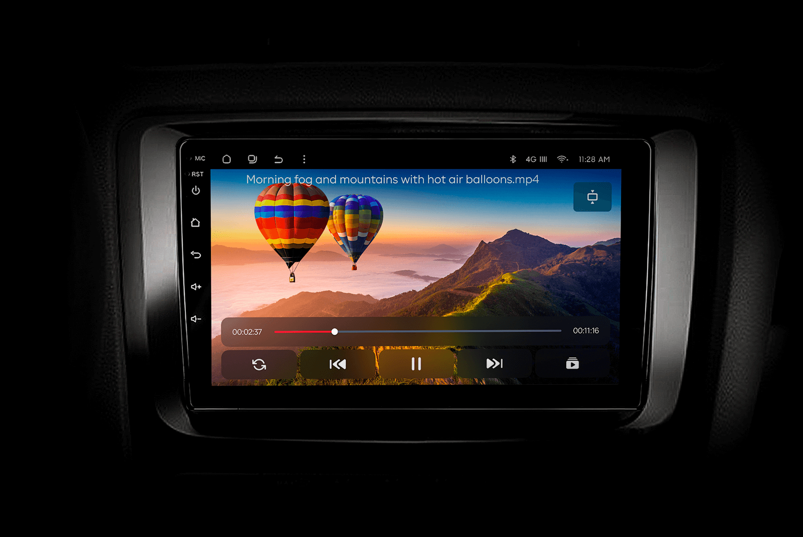
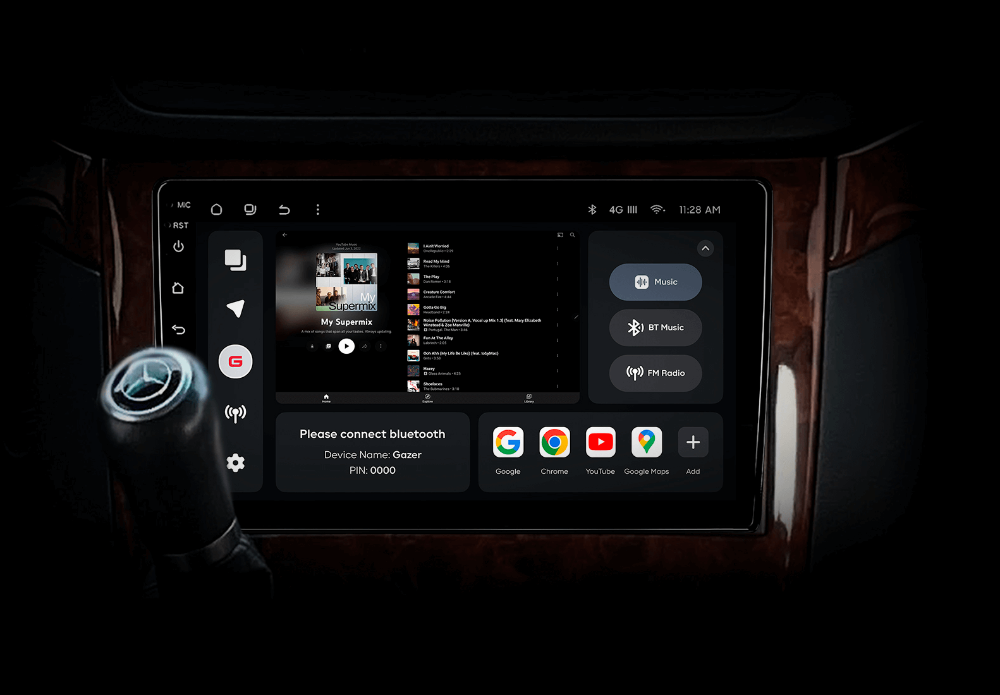
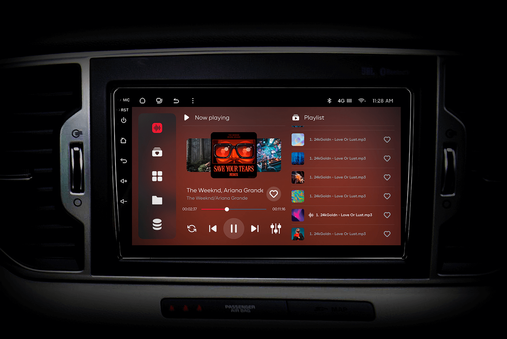
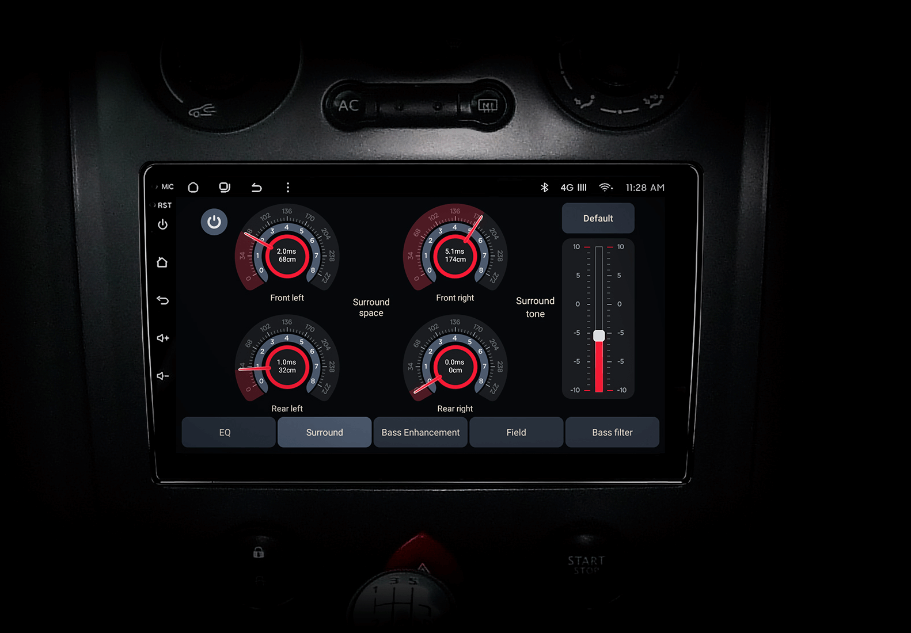
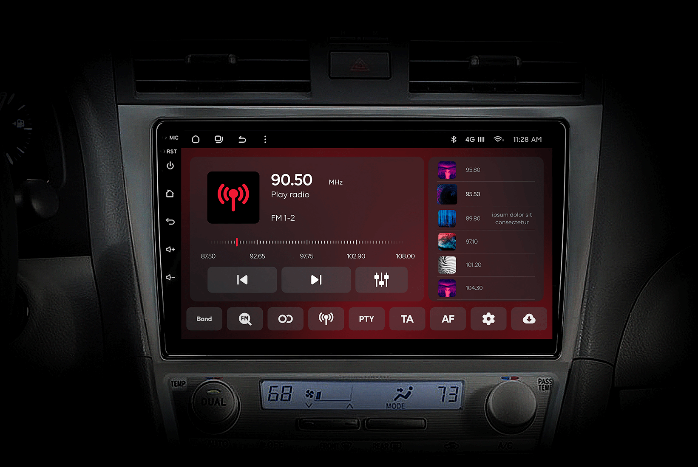
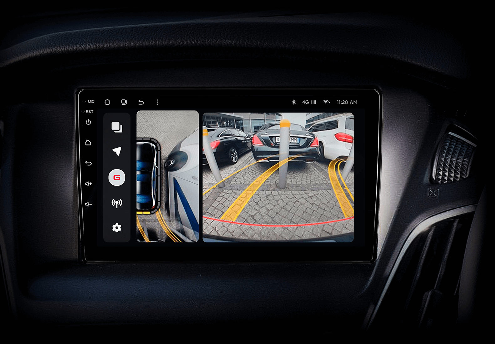

Забудьте назавжди про смартфон з навігацією у руці, на магніті або на
кріпленні.
Отримайте Apple CarPlay, Android Auto, Google Maps та Wase навігацію з інформацією про затори на
великому вбудованому екрані прямо у вашому автомобілі Toyota LandCruiser 200. Насолоджуйтесь
YouTube,
Netflix, Amazon, Disney, а також інтернет-радіо та потоковою музикою у вашому авто.
Мультимедійна система Gazer T6 PRO MAX створена спеціально для штатного встановлення у Toyota
LandCruiser 200 та інтегрується Plug&Play повністю як оригінальна. Неймовірно потужна, з постійним
доступом до інтернету, операційною системою Android та величезним сенсорним екраном.
Це найсучасніша навігація та розважальна система, що зробить ваші подорожі ще більш приємними та
безпечними.

CarPlay та Android Auto
Бездротовий режим CarPlay на великому екрані у вашому Toyota LandCruiser 200 — смартфон
приєднується
автоматично без підключення кабеля щойно ви заведете двигун. Тож вам не треба навіть діставати його з
кишені. На великому екрані мультимедійної системи T6 PRO MAX ви можете керувати смартфоном та
встановленими застосунками: навігація, музика, дзвінки тощо.
Режим Android Auto у вашому Toyota LandCruiser 200 тепер легко активується на великому екрані —
без
під'єднання через дата кабель до вашого смартфона. Увійдіть до вашого облікового запису Google у
мультимедіа системі T6 PRO MAX та синхронізуйте навігацію, контакти, пошту, календар. Тепер
великий
екран магнітоли — це ще один Android девайс у вашій екосистемі.

Google Maps або Wase —
онлайн навігація з пробками
Ваша улюблена навігація Google Maps або Wase нарешті на екрані вашого автомобіля Toyota
LandCruiser 200.
Завжди онлайн, а отже з інформацією про затори, камери і з можливістю шукати потрібні місця. Забудьте
про використання смартфона для навігації. Тепер побудувати маршрут і рухатись по ньому зручно
безпосередньо на екрані вашого автомобіля. Голосові підказки навігації приглушують музику або радіо.
Екран не перемикається при телефонній розмові гучним зв'язком. Ви більше ніколи не заблукаєте і не
пропустите поворот.

Величезний сенсорний екран
Великий сенсорний екран мультимедійної системи T6 PRO MAX — це як великий сучасний планшет,
вбудований у
Toyota LandCruiser 200. Розмір 9 або 10,2 дюймів з роздільною з датністю Full HD 1920х1080.
Технологія екрану multiled забезпечує яскраві та насичені кольори, як на найкращому телевізорі.
Антиблікове покриття запобігає відображенню сонячних променів на екрані та робить зображення
максимально
інформативним для водія та пасажирів.

Постійний доступ до Інтернету
Мультимедійна система T6 PRO MAX підтримує дві SIM карти для 4G LTE доступу до Інтернету. Як
тільки ви
завели авто — магнітола одразу підʼєднується і ви можете побудувати маршрут в Google Maps чи Wase.
Одразу в ефірі інтернет-радіо або ваш улюблений музичний застосунок. Хочете дивитись відео — обирайте
серед YouTube, Netflix, Amazon Prime, Disney або будь-який інший онлайн кінотеатр. Вам доступні більш
ніж 10 000 застосунків на Google PlayMarket: навігація, музика, фільми та серіали. З Інтернетом —
це справжній розважальний центр в Toyota LandCruiser 200, а не просто екран.

Тисячі Інтернет радіостанцій
з десятків країн
Ви назавжди забудете про 6 звичних кнопок FM радіо, серед яких зазвичай обираєте музику в машині. Тепер
ви зможете слухати будь-яку інтернет-радіостанцію будь-якої країни в цифровій якості без перешкод. Якщо
ви фанат звичного FM, то насолоджуйтесь зручною навігацією по радіостанціях з обкладинками та
RDS інформацією. Максимальна дальність приймання FM без перешкод — це візитівка Gazer multimedia system™
вже понад 10 років. Порівняйте з вашою штатною магнітолою Toyota LandCruiser 200 — тепер улюблені
станції грають на більшій відстані від міста без шипіння.

Неймовірний звук
Без перебільшень, ви тепер на концерті і музика грає просто попереду вас, наче музичний гурт
розташувався перед капотом вашого Toyota LandCruiser 200. Це не магія — це технологія Gazer
multisound.
Завдяки використанню DSP процессора, звукова сцена зміщується з центру салону вашого авто на капот прямо
перед водієм. Тож тепер вона звучить не за вашим правим плечем, а просто перед вами.
Налаштуйте звук ідеально під себе завдяки професійним інструментам рівня Hi-Fi. Еквалайзер на 32
смуги,
цифрові кросовери окремо для передньої та задньої акустики, гучність сабвуферів. Для справжніх
шанувальників побудови Hi-End звуку в авто доступні цифрові аудіо виходи 5.1 як в коаксіальному, так і в
оптичному форматі.

Bluetooth музика та гучний зв'язок
Транслюйте музику зі смартфона, навіть не виймаючи його з кишені. Мультимедійна система підʼєднається
до нього автоматично, і продовжить грати на тому ж треку, який ви слухали попередній раз. Найвища якість
передачі звуку HD забезпечується професійним модулем Bluetooth.
Розмови на гучному зв'язку — це безпека за кермом. З Gazer T6 PRO MAX ви будете приємно
здивовані якістю
звуку, а ваш співрозмовник навіть не помітить, що ви розмовляєте з машини. Все завдяки двом спеціальним
мікрофонам та системі шумоподавлення.

Камера заднього та переднього огляду
У повній темряві ви будете паркуватись легко і безпечно. Камера заднього огляду для автомобіля доступна
як опція до мультимедійної системи T6 PRO MAX. Максимальна якість Full HD 1920х1080 формату AHD.
Фірмові
налаштування нічного бачення, що схвалені професіоналами та експертами впродовж 10 років.
Камера переднього огляду доступна як опція. Замість передньої та задньої камер ви можете обрати систему
кругового огляду. Якщо у вашому Toyota LandCruiser 200 вже встановлена штатна камера заднього
огляду, то
вона буде підключена до мультимедійної системи. Так само підтримуються й оригінальні парктроніки, якщо
вони встановлені на ваше авто.
Функціональність та зручність
Навігація, плеєр чи застосунки? Не потрібно перемикатись — все одночасно відображається на вашому
екрані. Тож ви можете перемикати музику, не втрачаючи контроль над маршрутом. Налаштуйте під себе всі
чотири блоки головного екрану так, як вам зручно.
Не беріть в руки телефон, коли ви за кермом. Прочитайте SMS прямо на екрані мультимедійної системи
T6
PRO MAX, звісно тільки з вашого дозволу в налаштуваннях Bluetooth. Керуйте музикою зі штатних
кнопок на
кермі Toyota LandCruiser 200. Будуйте маршрут голосом, не відволікаючись від дороги ні на мить.
Потужність та надійність
Ви будете вражені швидкістю, бо це справді сучасний смартфон з величезним екраном. Операційна система
Android останнього покоління, потужний процесор 8 ядер, 6 Гб оперативної пам'яті, 128 Гб вбудованої
пам'яті.
Спеціальний вентилятор на задній частині мультимедійної системи T6 PRO MAX запобігає перегріву
процесора
навіть при екстремально високих температурах в салоні Toyota LandCruiser 200. Обов'язковий елемент та
гарантія надійної роботи на довгі роки для країн Middle East та Африки. Проте навіть в країнах середньої
смуги зараз буває екстремально жарко.
Повна сумісність з вашим автомобілем
Мультимедійна система T6 PRO MAX — це повноцінна штатна заміна оригінальній розважальній системі вашого
Toyota LandCruiser 200. Вона повністю повторює форму та якість пластику, і інсталюється зі збереженням
всіх елементів керування та інтер'єру. Підключення відбувається по принципу Plug&Play, без жодного
пошкодження або розриву проводки, з підʼєднанням всіх оригінальних роз'ємів вашого авто.
Підтримуються всі штатні функції: керування кнопками на кермі, підключення оригінальної камери та
парктроніків, оригінальна FM антена. Відображається інформація про налаштування автомобіля та його
статуси. Магнітола повністю інтегрована в ваш Toyota LandCruiser 200 і спілкується з ним по CAN шині
передачі даних.